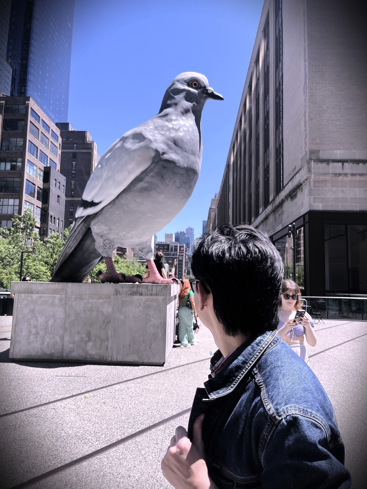

About Me
I've been programming for over seven years in a wide array of languages ranging from Java to Smalltalk.
I did my undergraduate degree in Computer Science at Pace University, graduating with honors in 2025.
Throughout my undergraduate education, I took many courses focusing on game development as well as literature courses about transmedia storytelling and writing for formats such as comics.
It was through these courses that I was able to develop a plethora of projects using the Unity engine and C# for the web, windows, and even VR devices.
In the field of Computer Science, game development was the area I was drawn to as I felt it had the most potential for creative expression.
I’ve always been interested in storytelling, and all of the various mediums that can achieve it, and games had the element of user interactivity that distinguished it from every other medium.
I believe that coding has tons of potential for creative application, and I feel this is something that p5.js can act as a gateway for.
In my free time, I am an avid consumer of media, being able to hold hour long conversations about properties like DC, Star Wars, and Doctor Who. I am also a musician who enjoys writing songs.